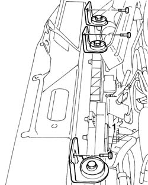
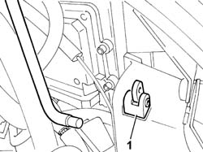
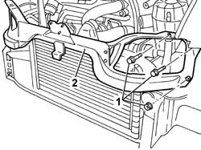

7072E32 HEADLAMP HOLDER CROSSMEMBER - R.R.
- Path
- Procedures > 70 FITTINGS > 7072 > 7072E > 7072E32 HEADLAMP HOLDER CROSSMEMBER - R.R.
- Kind
- repair procedure (removal / refitting; the operation number is the code)
- Applies to
- all engines; all production periods
- Interactive page
- https://sloeber94.github.io/elrnDB-fDct/en/#/244001554
Applies to: all engines; all production periods
 Removing
Removing
 Refitting
RefittingOp. 7025A34 BONNET LID LOCK (ONE) - R+R OR REPAIR
- Undo the bolts and fold the hose complete with cold air intake at the side.
Op. 5540B10 EXTERIOR LIGHT DIMMER RESISTOR - R+R
Both sides
1. Undo the radiator fixing bolts.

Applies to: all engines; all production periods
- Fit a temporary bonnet lid stay.
1. Remove the bonnet lid stay from the headlamp holder crossmember.

Applies to: all engines; all production periods
1. Undo the bolts and nuts fixing the crossmember to the bodyshell.
2. Remove the headlamp holder crossmember.

Applies to: all engines; all production periods
Refitting
Removing- Fit the headlamp holder crossmember in position.
- Tighten the bolts fixing the headlamp holder crossmember to the bodyshell.
- Tighten the nuts fixing the headlamp holder crossmember to the bodyshell to torque.
Value - daNm | Fastening | Component | Ø | |
|---|---|---|---|---|
- | 2.9 daNm | nuts | M8 |
- Attach the bonnet lid stay.
- Remove the temporary strut
- Tighten the radiator fixing bolts.
Op. 5540B10 EXTERIOR LIGHT DIMMER RESISTOR - R+R
Both sides
- Reposition the bolts fixing the power assisted steering fluid reservoir and tighten them.
- Reposition the bolts fixing hose complete with cold air intake and fasten them.
Topics linked from this page (3)
- 5540B10 EXTERIOR LIGHT DIMMER RESISTOR - R+R
- 7025A34 BONNET LID LOCK (ONE) - R+R OR REPAIR
- 7210E10 R.R. FRONT BUMPER